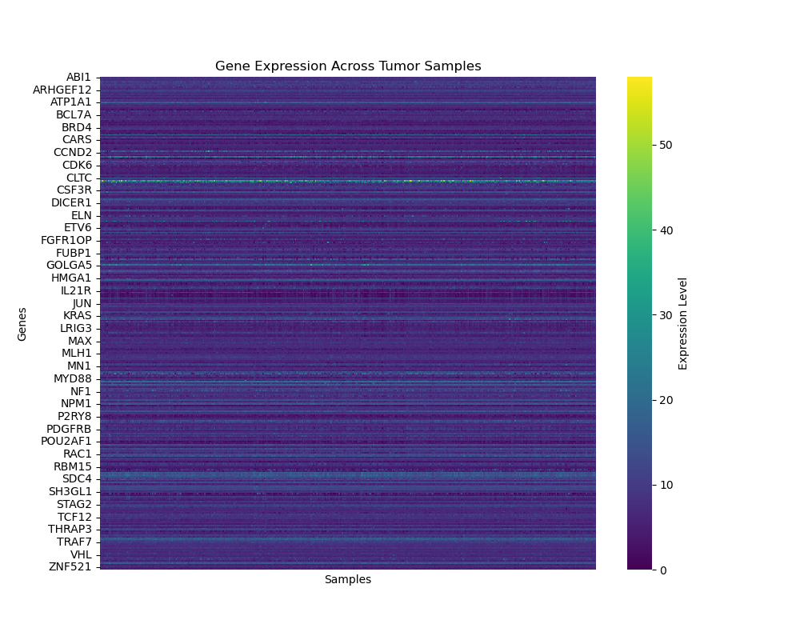

The BRCA dataset contains gene expression measurements from
445 breast cancer tumor samples and
353 genes obtained from The Cancer Genome Atlas (TCGA).
Each row represents a single tumor sample, while each column corresponds
to a specific gene's expression level. Larger expression values indicate
higher activation of that gene within the tumor.
In addition to the gene expression data, six clinical variables are provided for each patient: Subtype (one of Basal-like, Luminal A, Luminal B, HER2-enriched, or Normal-like), ER-Status (estrogen receptor), PR-Status (progesterone receptor), HER2-Status (human epidermal growth factor receptor 2), Node (number of lymph nodes involved), and Metastasis (indicator of whether the cancer has metastasized).
The heatmap below visualizes the expression levels of all 353 genes across the 445 tumor samples. Each row represents a gene, and each column represents a tumor. The consistent horizontal bands indicate genes that are expressed across nearly all samples, while variations in color intensity highlight differences in gene activation patterns between tumor subtypes.

Because this is an unsupervised exploratory task, the goal is to identify meaningful structure
rather than maximize predictive accuracy. All dimensionality reduction methods were therefore
constrained to a two-dimensional embedding (n_components = 2), which provides a
clear and consistent visual summary of tumor-level variation in gene expression. Higher
dimensions would not add interpretive value since most methods (e.g., t-SNE, UMAP, Isomap)
are not ordered or nested by variance explained.
Hyperparameter tuning was guided by the principle of neighborhood preservation. Specifically, parameter sets were evaluated using the mean Jaccard similarity between each sample's nearest neighbors in the original high-dimensional space and those in the low-dimensional embedding. This metric quantifies how faithfully local relationships are maintained after projection. The parameters yielding the highest Jaccard index were selected for each method.
This approach ensures that all methods are compared on equal footing—two-dimensional embeddings optimized for local structure preservation—allowing direct assessment of which algorithm most effectively reveals the intrinsic organization of breast cancer gene expression data.
Because this analysis is entirely unsupervised, there are no ground-truth labels available to perform conventional supervised hyperparameter tuning or downstream validation (e.g., cross-validated accuracy or reconstruction error). Instead, the quality of each low-dimensional embedding is assessed by how well it preserves the structure of the original high-dimensional space.
To quantify this, a Jaccard neighborhood preservation metric was used. For each sample, the set of k nearest neighbors in the full 353-dimensional gene expression space was compared to its corresponding neighbors in the two-dimensional embedding. The Jaccard similarity between these sets measures local structure preservation, and the mean value across all samples provides a single, interpretable score for each method. Higher scores indicate embeddings that maintain more of the intrinsic manifold geometry.
This approach allows principled comparison of the five dimensionality reduction techniques without relying on supervised information. It directly measures how faithfully each algorithm captures the relational structure between tumor samples in gene-expression space.